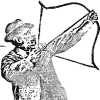
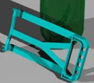
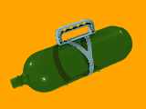
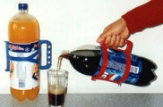
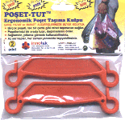
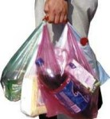
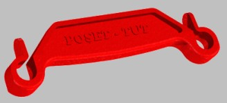

Osmanlý'da okçuluk üzerine 2002'de yapýlmýþ bir çalýþma;
Osmanlý okçulukta liderdi (Ýngiliz'lerin Türk okçuluðuna hayranlýðý ve ilgili internet kaynaklarý...)
Osmanlý'nýn gerileme dönemlerinde belli yönlerden biz Avrupa'ya benzemeye çalýþýp hayranlýk duyarken onlar da bazý konularda bize karþý hayranlýk duyuyorlardý...
KOLAYTUT
2.5L, 2.5L PET þiþeler için portatif servis kulpu:
Türkiye
ve Avrupa'da yaygýn olarak kullanýlan ekonomik boy 2.5L
PET gazoz þiþelerini tek elle kavramak ve servis yapmak
oldukça zordur. Çünkü þiþe çapý, tek elle kavramak için
büyüktür, kavransa dahi ince ve esnek þiþe cidarlarý baskýyla
göçebileceði için bu, tehlikeli olmaktadýr.
Tek parçadan oluþan bu yeni ve innovativ plastik ürünümüz
piyasadaki her marka 2.5 L PET þiþesinin bir sürahi rahatlýðý
ile kullanýlmasýna imkan vermektedir.



POÞET-TUT,
Ergonomik Poþet Taþýma Kulpu:
Birçok
poþetin, tek bir çanta gibi rahat taþýnmasýný saðlar.
Poþetleri
bir arada tutarak daðýlmalarýný önler.



1995, (Boston, MA, ABD)
Bilgisayar destekli tasarým ve imalat konularýnda, özellikle
de otoinþa teknolojisi ile hýzlý prototip ve kalýp imalatý
konusunda çalýþmalarda bulunmuþtur. Dünya'da, patenti alýnmýþ,
araþtýrma safhasýnda veya ticari olan tüm otoinþa teknolojilerinin
dökümü ve sýnýflandýrýlmasý ile ilgili hazýrladýðý bir diagram
ABD ve Almanya'daki bazý üniversite ve araþtýrma kurumlarýnda
eðitim materyali olarak kullanýlmýþtýr;
Classification of major additive automated fabrication technologies according to applied fabrication technique and raw phase and/or form of build material. > Major Additive Automated Fabrication Technologies
rp-ml e-posta grubuna 1996 yýlýnda gönderilmiþ ilgili bir e-posta için týklayýnýz;
AAF Technologies Classification Chart http://rapid.lpt.fi/rp-ml-1996/0406.html
Bu çalýþmanýn bir devamý olarak, ticari otoinþa sistemlerini Türkçe olarak sýnýflayýp inceleyen bir rapor 1997'den itibaren internetten yayýna baþlamýþtýr. TurkCADCAM.net Portalýndaki rapor/makale bölümünün çekirdeðini teþkil eden
bu rapor, en çok ziyaret edilen ve ilgi çeken içerikten biridir;
Ýmalatta Mükemmele Doðru; Otoinþa Teknolojileri: www.turkcadcam.net/rapor/otoinsa
1988 yýlýnda TÜBÝTAK/ MAM (Marmara araþtýrma Merkezi)'nde
yaptýðým staj sýrasýnda, su pompalamak amacýyla tasarlanmýþ
bir rüzgar tirbününe, verimi arttýrmak için yeni bir kademesiz
deðiþken stroklu (bir tür vites) mekanizmasý tasarladým. Ardýndan bu mekanizmadan
bir prototip baþarýyla imal edilip uygulandý.
Rüzgar türbini ve pistonlu su pompasý, 23-09-1988
(Solda, beraber staj yaptýðýmýz Üzeyir Pala görülüyor)
Kademesiz
deðiþken strok mekanizmasý, 23-09-1988
Model
Tank (EN 1-3):
Tasarým
ve imalat konusunda kendimi geliþtirmek için üniversite
öðrenciliðimin ilk 3 yýlýndaki sömestir ve yaz tatillerinde
(1985-1988) bir model tank tasarlayarak imal ettim.
Yaklaþýk
40cm boyunda olan bu tank, 5 adet elektrik motoru ve diþli
kutusu tarafýndan telli kumanda ile uzaktan kontrol edilebilmektedir.
Namlu
kendi etrafýnda 360° dönebildiði gibi 90° de kalkabilmektedir.
Tank
çift namluya sahiptir; Sol namlu, içine konulan 22 adet
boncuðu yaklaþýk 5 saniye aralýklarla tam otomatik olarak
fýrlatabilmektedir. Sað namlu ise yerinden sökülebilir olup,
bir adet zýpkýn doldurulabilir ve uzaktan kumanda ile ateþ
edilebilir. Zýpkýn, 10 mm kalýnlýðýndaki oluku kartonu delebilecek
güçtedir.
Tankýn
her paleti ayrý bir motor tarafýndan idare edilir ve süspansiyon
sistemi mevcuttur.
Ýki namlu arasýnda bir projektör ampül bulunmaktadýr.
Tank,
4 adet orta boy pil veya elektrik adaptörü ile çalýþabilmektedir.
Buhar jeti
tahrikli model denizaltý:
Bir
engele çarptýðýnda otomatik olarak geri dönen buhar jeti
tahrikli model denizaltý (03-12-1978, Yaþ: 11)
Aþaðýda
soldaki resmi çizdiðim gün, (ilkokul 3. sýnýftayken) makine
mühendisi olmaya karar vermiþtim. Sonraki yýllarda genellikle
oyuncaklarýmý kendim tasarlayýp imal ederek ilk mühendislik
ve yeni ürün geliþtirme çalýþmalarýmý yapmýþ oldum...